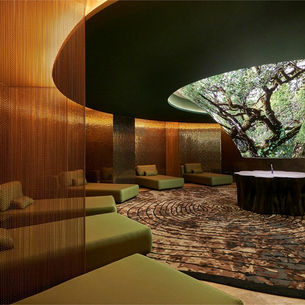
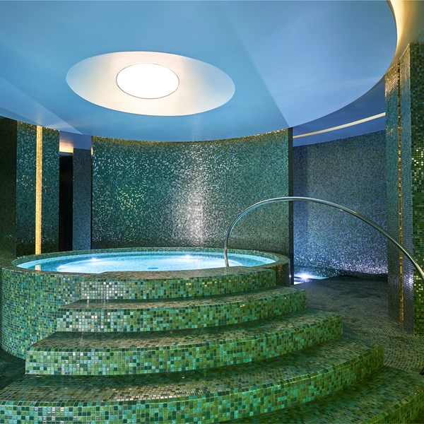
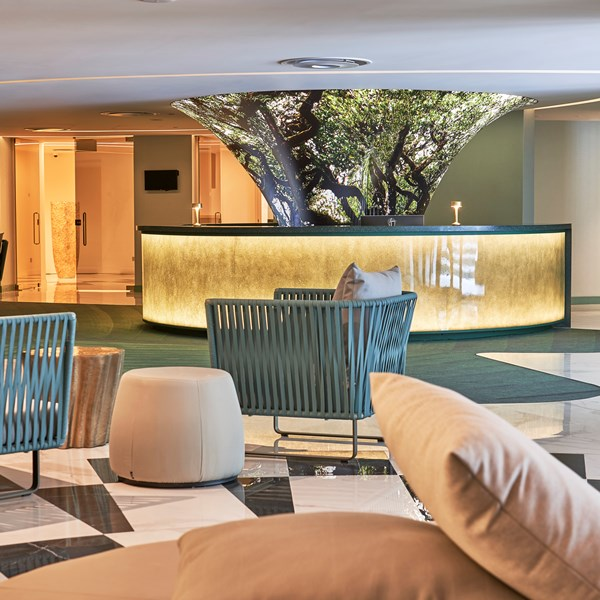
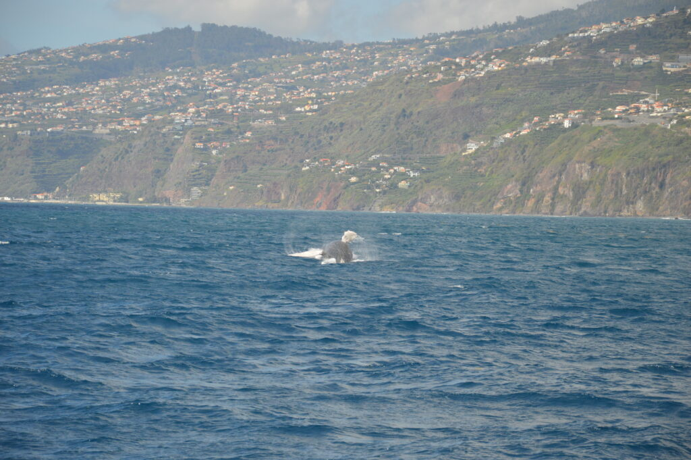
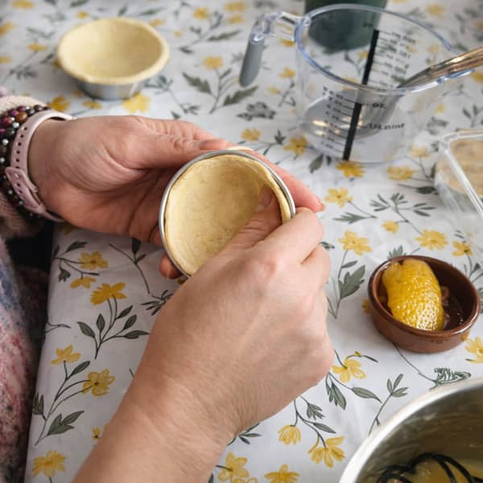
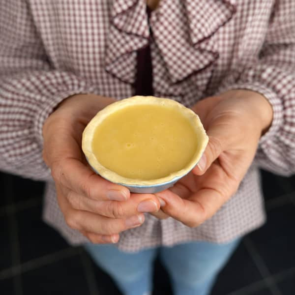
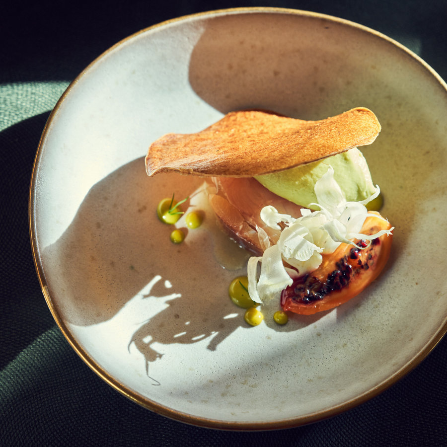
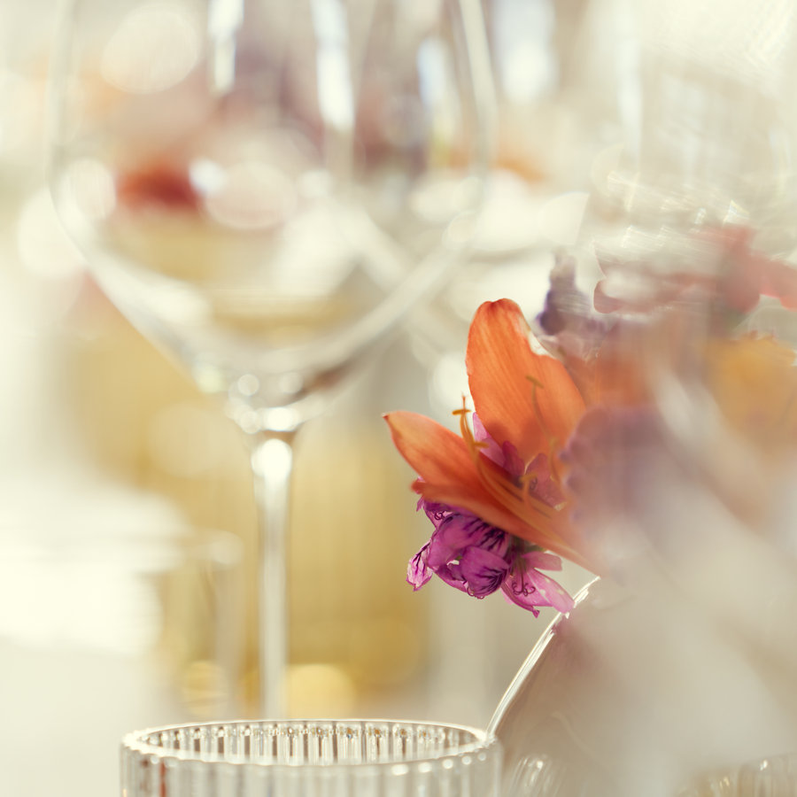
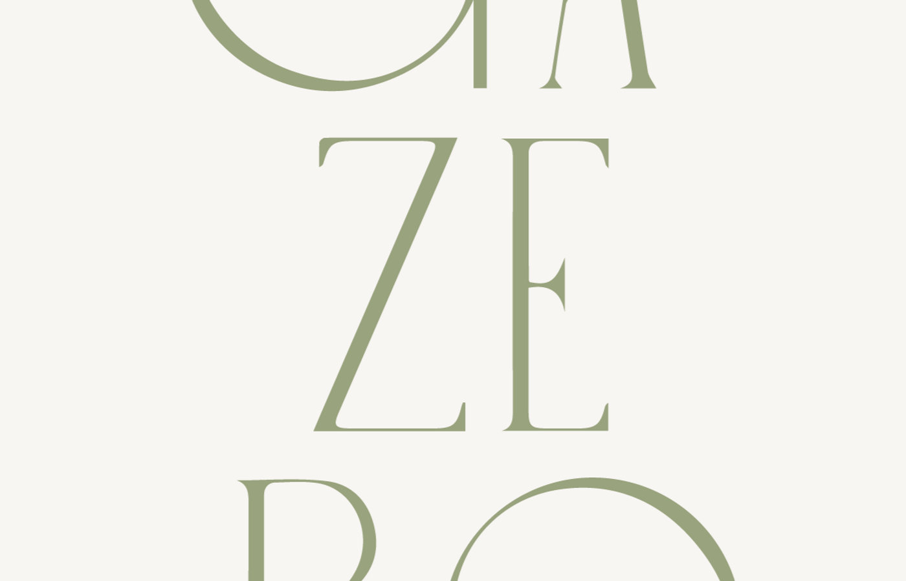

Madeira · October 2026
Three days that could happen.
Warm, quiet, and entirely unhurried. Flour on our hands first, then the west coast turning gold around us. A table hidden behind a door we'd normally walk straight past. Three very different ways to spend a little piece of Madeira — pick the one that feels most like ours.
The slow morning
Three thousand square metres of spa built to feel like the inside of the Laurissilva forest — the mossy, ancient, permanently damp one we'll be hiking through anyway. Except this version has an ice fountain, a Himalayan salt room and a heated pool with waterfalls. It has been voted the best hotel spa in Portugal three times.







How the day goes
- We arrive and change. Robes, slippers, the whole thing. There's a champagne and nails bar by the entrance, which I'm mentioning purely as information.
- Sixty minutes of massage, side by side. Same room, same table height, warm aromatherapy oils. Neither of us has to make conversation for an hour.
- Then the circuit. Turkish bath, sauna, steam room, sensory showers, the ice fountain when the sauna gets ridiculous, the salt room when we want to lie down again.
- The heated indoor pool. Waterfalls, lagoons, loungers. This is where the afternoon quietly disappears.
- Out into Funchal at dusk feeling like a different species. Savoy Palace is on Avenida do Infante, so we're a five-minute walk from dinner wherever we end up.
- Where
- Laurea Spa, Savoy Palace
Avenida do Infante 25, Funchal - Size
- 3,100 m² · 13 treatment rooms
- Open
- 10:00 – 20:00, daily
- Awards
- Portugal's Best Hotel Spa — World Spa Awards 2021, 2024, 2025
- Also on site
- Zerobody dry float therapy — floating on warm water without getting wet, if we're feeling experimental
The forest-inspired thing isn't marketing. They built the whole place around the Laurissilva — the scent, the greens, the water. It's the island, indoors, at body temperature.Why I picked it
Sugar, then sunset
The seabed drops away almost vertically a few hundred metres off Madeira's coast, which is why more than twenty-five species of whale and dolphin pass through here without ever coming near a harbour. The version I keep picturing starts in Funchal, learning to make pastéis de nata properly, then heads west to Calheta for a small yacht and the last light of the day.







How the day goes
- Funchal first, and a kitchen. Six people max, in a room done up like someone's grandmother's house. We make the custard, fill the pastry, and eat them still too hot to hold.
- Unlimited wine throughout. Which is a design decision I respect. We take home whatever we don't finish.
- Then we head west. Calheta is about an hour down the coast, and the drive itself is half the point. We reach the marina fifteen minutes early and meet the crew at their little shop at the end.
- Onto the yacht. Twelve people maximum, usually six. Sofas, a front deck to lie on, towels and blankets and snorkelling gear all just there. Drinks are on them.
- A spotter on the mountain radios the captain. No sonar, no drones, no chasing — that's regulated here, and this crew is unusually serious about it. Pilot whales and bottlenose dolphins live here year-round; in October there's a real chance of sperm whales too.
- We finish on the water. Maybe we anchor in a bay and get in — it's still around 23°C in October. Either way, the last part of the day is the west coast turning gold around us.
- The boat
- On Tales, Marina da Calheta
2.5 hours · max 12 guests - Rated
- 4.9 / 5 across 1,272 reviews · Tripadvisor Travellers' Choice
- The kitchen
- 1.5 hours · max 6 people · hotel pickup included
Centro Comercial Olimpo, Funchal - Included on board
- Drinks, snorkelling kit, towels, blankets, hot shower, and the crew's photos of the day sent afterwards
- Honest bit
- Wildlife isn't guaranteed and they refuse to pretend otherwise. Morning odds are better than evening.
Order of the day
Pastéis and wine first, then west to Calheta. We finish on the water as the sun drops — the version I keep picturing.
Time on the water
Two and a half hours in this exact light. Fewer sightings than the morning, but the west coast at sunset is genuinely absurd — and we'd be looking at it from the water.
The secret garden
There's an unmarked door in a concrete wall on Rua dos Ilhéus. You press a buzzer, it clicks open, you climb some steps — and you're in a century-old Madeiran quinta where a family still lives. Ten tables. An open kitchen. Chef Filipe Janeiro cooking a tasting menu out of his own garden, and coming out between courses to tell you about each one himself.







How the evening goes
- 19:30, one sitting. Everyone arrives together. There's a garden and a patio to have a drink in before we sit down.
- The kitchen is in the room. Not behind glass — in the room. You watch the whole menu being made while you eat it.
- The menu is seasonal and it's his. As much as possible from the quinta's own garden, the rest from small producers around the island. October means whatever October gives him.
- Filipe comes out. Every review says the same thing — he introduces himself, explains the thinking behind each course, and helps you pick the wine. It reads less like a restaurant and more like being fed in someone's house.
- Two and a half hours, roughly. Then back out through the unmarked door into a normal street, which is the best part.
- Where
- Gazebo, Rua dos Ilhéus 30
São Martinho, Funchal - When
- One sitting at 19:30
Tuesday to Saturday - Room
- Ten tables, open kitchen, garden and patio
- Recognition
- MICHELIN Guide 2026 · 1 Sol, Guía Repsol 2026 · 4.9 / 5 on Google
- Chef
- Filipe Janeiro — started out as a private chef, opened this in his family's own quinta
Which menu
Six courses, and a wine chosen specifically for each one. Filipe walks you through the pairing at the table. Shorter, but nothing is left for us to figure out — the food and the wine arrive as a single idea. This is the one I'd pick.
I celebrated my birthday at Gazebo and it turned out to be one of the most unforgettable evenings. The chef greeted us on arrival and came back later to help us choose the wine.From a review, which is partly why we're here
Whichever you pick, I've got it from here. — A